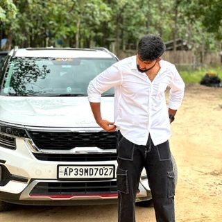

// UX Designer · UI Designer · Developer · AI Enthusiast
I'm a Java backend developer turned UX/UI designer with a deep interest in how AI is reshaping digital experiences. My engineering foundation gives me an unusual edge — I understand systems deeply, which means I design for real constraints, not ideal worlds.
Based in Bengaluru. Currently crafting interfaces at the intersection of human intuition and machine intelligence.

Started with a BTech in Electronics & Engineering from Bengaluru, minoring in Management. Built enterprise-grade backend systems using Java, Spring Boot, and Microservices — learning how complex software actually gets made.
Working on a security management platform (Vector Flow), I kept asking: why is this so hard to use? That frustration became curiosity. I started studying UX research, wireframing, and interaction design — and never looked back.
Today I bring both worlds together. My dev background means I prototype with real constraints in mind, while my design training keeps users at the centre. My next chapter is designing AI-first products that are genuinely intuitive.
Coursera-certified in Foundations of UX Design, Start the UX Design Process (empathy, wireframing, low-fi prototyping) and Build Wireframes & Low-Fidelity Prototypes.
Shipped production features for enterprise physical security platforms — workforce identity, access control, and compliance systems used by large organisations.
I run design sprints collaboratively, presenting to stakeholders and incorporating feedback fast — because I understand engineering timelines from the inside.
I believe the next frontier of UX isn't just beautiful screens — it's designing how humans and AI collaborate. My background in backend systems means I can speak the language of ML engineers while advocating for the user in every conversation.
I'm actively exploring: AI onboarding flows, explainability UX, prompt interface design, and building low-fi prototypes for AI-powered products in Figma.
Designing first-run experiences that make AI feel approachable and trustworthy.
Crafting interfaces where natural language feels like the most obvious input.
Helping users understand and trust AI decisions through transparent design.
Using AI tools to accelerate research synthesis, asset generation, and iteration speed.
Pursuing Coursera's Google UX Design Professional Certificate. Conducting UX research studies, building Figma wireframes, lo-fi and hi-fi prototypes. Developing a portfolio of case studies covering the full design process — empathy mapping, personas, IA, and final deliverables.
Built and maintained a physical security management platform — workforce identity, physical access control, compliance reporting. Worked with Java 8, Spring Boot, Microservices, Oracle DB. Participated in Scrum, wrote JUnit tests, maintained Jenkins CI/CD pipelines, earned the Spotlight Award for performance.
Major in Electronics Engineering, Minor in Management & Business Studies. Strong foundation in systems thinking, mathematics, and problem decomposition — all skills that directly translate to UX design.
Good UX isn't just a pretty screen — it's understanding the full system. My dev background means I think in flows, edge cases, and states, not just happy paths.
I study how AI products are built and where they fail users. I design for transparency, trust, and the inevitable moments when AI gets things wrong.
Every design decision I make is anchored in real user evidence. Empathy maps, personas, and usability studies come before pixels — always.
I can sit in a room with engineers and speak their language. That makes handoffs cleaner, feedback loops faster, and products ship closer to the design.
Each project documents the full UX process — from discovery and empathy research to information architecture, personas, and final design deliverables.